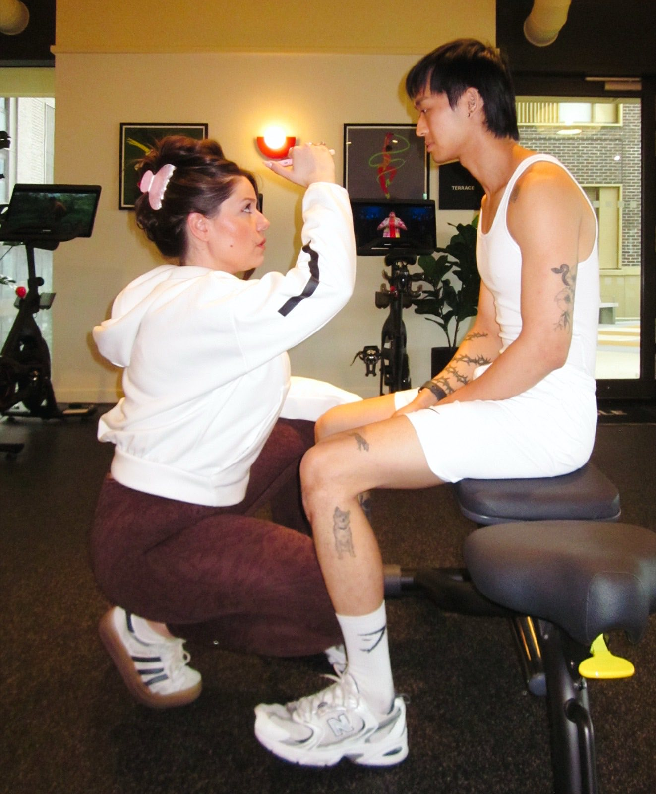

Autonomic Regulation
Building the neurological resilience to shift out of sympathetic overdrive and handle high-pressure competitive environments with absolute calm.

Pillar III · Neuro-Performance
An Elite Neuro-Performance Methodology for Professional Combat Athletes.
Designed by Maria Elena Cismarescu · Boxing Neuro-Performance Coach
"True elite performance in combat sports is not decided by muscular capacity; it is dictated by central nervous system efficiency. Every punch thrown, every slip executed, and every split-second decision under fire is a direct reflection of your neurological budget.
This is a private, data-driven partnership engineered exclusively for professional boxers and elite combat athletes. By treating the brain as the ultimate command center, we systematically clear neuro-fatigue, optimize the dopamine-testosterone axis, and anchor your autonomic nervous system in absolute stability.
We ensure your underlying neurophysiology can match your psychological ambition when you step inside the ropes."
The Neurological Budget & CNS Efficiency
Wellness is not an abstract concept; it is the data-driven management of your central nervous system (CNS). We audit your training, cognitive, and environmental loads to eliminate the invisible stressors that drain your reactive power.
Building the neurological resilience to shift out of sympathetic overdrive and handle high-pressure competitive environments with absolute calm.
Redefining rest not as downtime, but as an active, high-performance protocol that sharpens your cognitive processing and accelerates cellular repair.
Aligning your circadian biology and sleep architecture to maximize natural growth hormone production and sustain explosive daily energy.
The Mindset of Command & Lifestyle Ecosystem
This is about the cognitive clarity required to command your body under extreme competitive pressure. True optimization cannot happen in a vacuum; we look at the totality of your life to eliminate the invisible drains on your energy.
We conduct a deep, 360-degree audit of your entire ecosystem— including personal stress, sleep environments, and daily friction points. By uncovering hidden emotional and psychological triggers, we prevent them from manifesting as physical fatigue.
High performance can be isolating. This space acts as your private sounding board, offering the psychological decompression needed to process high-stakes pressure and maintain absolute mental clarity.
Designing a lifestyle that allows you to dominate your sport today, while protecting the longevity of your physical, mental, and emotional health for the future.
Recovery as Strategy
The contest is decided long before the bell. What separates the elite is not the intensity of the output, but the precision of the return.
Every protocol here serves one end: a nervous system that holds its composure under load, and a body that repairs faster than it is asked to perform.
Our System
From first consultation to post-fight aftercare, every stage is sequenced. Nothing is left to chance, and nothing begins before the nervous system is ready for it.
Complete baseline mapping, data collection, and initial neuro-testing to expose structural and visual blind spots.
A mandatory solo "Software Cleanse" tracker to clear baseline central nervous system fatigue before a single live drill begins.
High-speed visual zone drills, deep sensory territorial claims, coordinate hacks, tactical tactile corner resets and breath codes.
A precise pre-fight dressing room warmup that activates the corticospinal tract with zero physical energy drain.
Immediate locker room de-escalation, the high-speed "Press Conference Shield", and a 7-day neurological aftercare routine.
Personalized visualization matrixes, social co-regulation protocols, precise endocrine scheduling and trauma unloading.
Proprietary Diagnostics · The M-TALT™
Endocrine peaks should never be left to luck. The M-TALT™ is a proprietary, live diagnostic framework administered directly by Neuro-Performance Coach Maria Cismarescu during camp and your pre-fight setup. By mapping five exact neurological and structural indicators, this live assessment tracks, calculates, and verifies the hormonal impact of our strategic Endocrine Reset Windows—ensuring your system achieves its absolute highest possible testosterone and androgen saturation the moment you step into the ring.
Membership
A short conversation, before any commitment. We reply within five working days.